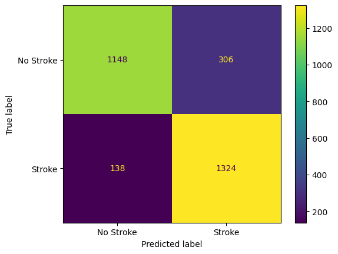
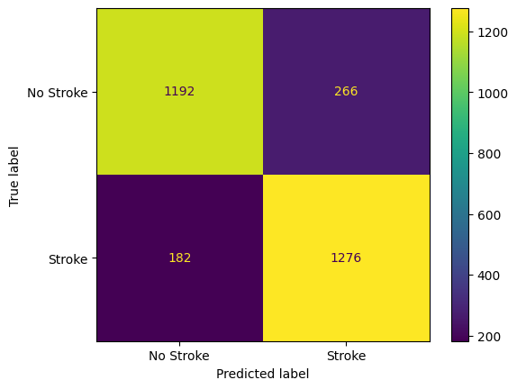
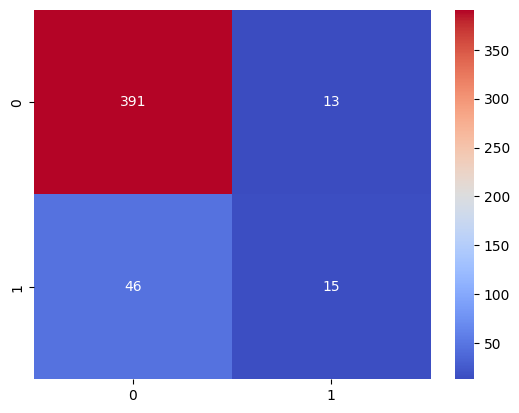
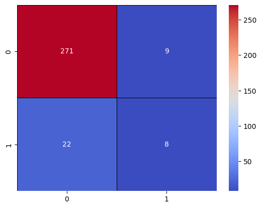
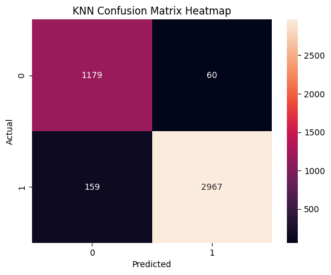
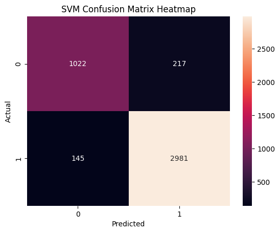

Various machine learning projects showcasing different applications and techniques.
Train three different machine learning models named Random forest, Gradient boosting and SVM using different data Balancing techniques like SMOTE, Random Over Sample and Random Under Sample to predict the risk of heart stroke.


Use three machine learning algorithms named Random forest, SVM and KNN to classify the credit card details. The dataset is taken from Kaggle and model is evaluated on the basis of accuracy and F1 score.


Compare three machine learning algorithms named Random forest, SVM and KNN on the ECG data to predict the heart attack. The dataset is taken from Kaggle and model is evaluated on the basis of accuracy, precision, Recall and F1 score.

